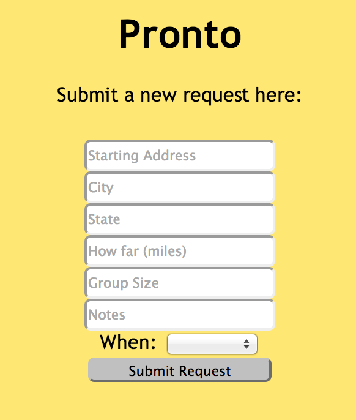
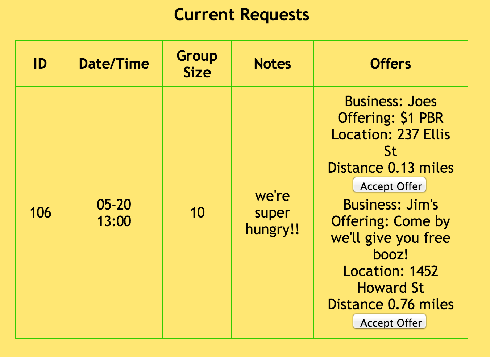
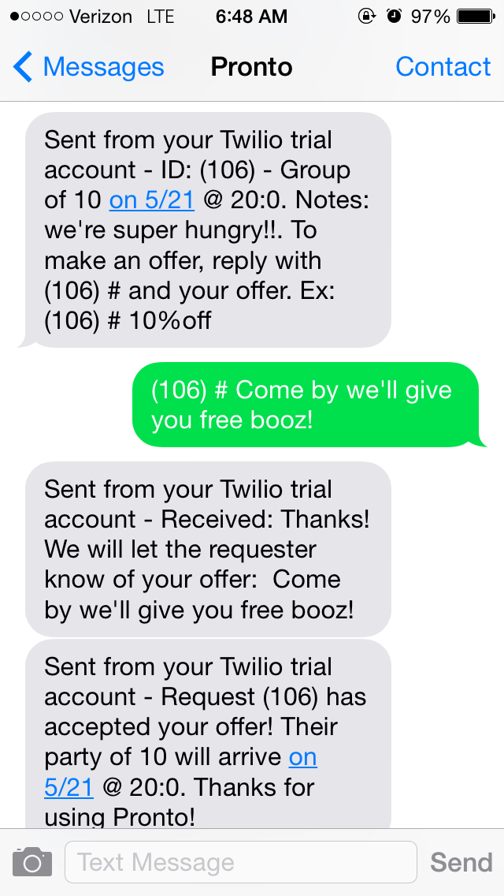

What is Pronto?
Pronto is a free service that connects hungry groups of people with nearby restaurants that want to accomodate.
Why use Pronto?
When you're with a group of people looking for food, it can be difficult to find a place last minute that can accomodate. With Pronto, you can contact all participating nearby restaurants at the same time. You will get real time responses from restaurants who can accomodate along with any deals or discounts they may be offering.
If you are a restaurant owner, you know that empty tables means that you are not maximizing profit. Pronto connects you with hungry groups of people to fill those empty tables. Offer them a discount to close the deal!
How it works:
Its super easy to use Pronto after you have logged in. Just follow these steps:
- Submit the form with your address, number of people in your group, when you are looking to eat, and any special notes.

- Wait for real time responses from participating nearby restaurants to show up on your dasbhoard
- Once you have decided on the restaurant, click accept to send them a message and let them know you are on the way!

For restaurant owners:
- Whenever someone is looking for food. You will receive a text message with information about their group
- If you want to accomodate, reply to the text message along with any special offers or discounts
- If the group wants to take you up on your offer, you will receive a confirmation text message
